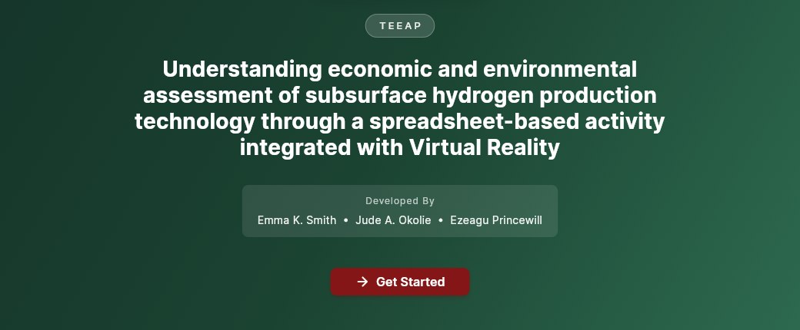

Education for Chemical Engineers, 2025
Teaching the SDGs
A team-based activity integrated with comics for introducing the Sustainable Development Goals in classrooms. Read the article →
Educational apps and games, STEM outreach, and our commitment to diversity, equity and inclusion.
Interactive tools, virtual reality activities and games developed by Dr. Okolie and team members to make chemical engineering concepts approachable.

An interactive web app for understanding the economic and environmental assessment of subsurface hydrogen production technology, through a spreadsheet-based activity integrated with virtual reality. Developed by Emma K. Smith, Jude A. Okolie and Ezeagu Princewill.
The approach is described in our ASEE 2024 paper, Spreadsheet-based application integrated with virtual reality for teaching economic and environmental assessment of subsurface gasification for hydrogen production.
A mobile and web app with short, adaptive practice problems built on real engineering scenarios such as reactor dynamics, heat transfer and material balances. An AI engine generates problems, gives step-by-step solution guidance and checks answers in real time, and instructor dashboards track student progress. Developed by Prof. Jude Okolie, Dr. Ezeagu Princewill and Ahuva Limited, and presented at the 2026 AIChE Annual Meeting.
A team-based activity integrated with comics for introducing the Sustainable Development Goals in classrooms. Read the article →
Engineering design process through game-based learning for first-year engineering students (ASEE 2024). Read the paper →
A modified hands-on CanSat program for promoting STEM education and career aspirations (ASEE 2026). Read the paper →
An encyclopedia entry surveying games used in chemical engineering laboratory courses, including escape games and virtual and augmented reality games for fluid mechanics, organic reactions and process control, and the future of gamification in chemical engineering labs.
Read on MDPI Encyclopedia →Dr. Okolie is deeply committed to science outreach, community engagement, and improving adult literacy. He is a regular volunteer with Let's Talk Science at USASK and a two-time recipient of the Outstanding STEM Volunteer Award and the Graduate Service Fellowship at the University of Saskatchewan. He has mentored over 150 high school students, partnered with more than 20 families to improve literacy skills in Saskatchewan, and developed over 15 hands-on experiments for kids and high school students. He is also an active volunteer with the Boys and Girls Club of Saskatoon, helping design hands-on science activities for before- and after-school programs.
Doing my master's degree at Tallinn University of Technology in Estonia, was for me, a black man, challenging. I became aware of systematic racism and the challenges faced by a non-majority group. I often struggled to participate in group discussions because I was the only black person in the class. I felt intimidated, and more importantly, I thought that the instructors could do more to accommodate the diversity in the class population. As a result, I was determined to ensure that no one ever feels the same way while learning.
I have lived in 5 different countries and travelled to more than 21 countries across four continents. During those periods, I realized that humans are diverse; we learn differently. We have different cultures, religions, and beliefs, and sometimes our ability to assimilate and comprehend information differs. My experience with a diverse population also taught me the challenges and opportunities of managing a multiethnic classroom. Therefore, it is imperative to create a learning environment where everyone feels comfortable and welcomed.
My thinking about diversity has influenced my teaching and research in the past few years. I often employ teaching methods that focus on different learning styles that can accommodate different learning abilities. For example, I frequently used the "flipped" lectures approach while teaching at the University of Saskatchewan. I created weekly videos and self-paced materials through the university course management system to help working students or families.
When I was teaching in Nigeria, I introduced a cultural effect into the Engineering curriculum. We would study different tribes in Nigeria and how their background influenced their career choices, especially in Engineering. The underrepresented groups, especially the female students, were encouraged to pursue an Engineering degree. At the beginning of each class, I would share pictures of notable female engineers and ask my students to state their achievements and contribution to society. This strategy improved the participation and engagement of female students in my class.
At the University of Saskatchewan, diversity and inclusive education are essential. The University has the mandate to provide high-quality education to all learners regardless of their race, sexual orientation, disability, or religious beliefs. Therefore, it was easy to incorporate diversity into my curriculum. I also participated in several workshops related to Indigenization and Indigenous. I am hoping to integrate the lesson from those workshops in my classroom. I believe that diversity is an integral part of academic excellence. Therefore I strive to understand the role it plays in the lives of my students.
During my Ph.D. studies, I was a member of campus groups focused on diversity, equity, climate, and inclusion in my four years. I facilitated several STEM-related workshops for under-served groups in Saskatoon. I organized the Let's Talk Science and Science Rendezvous with a record number of participants. More importantly, I created STEM programs that promote diversity in Science and Engineering among high school students.